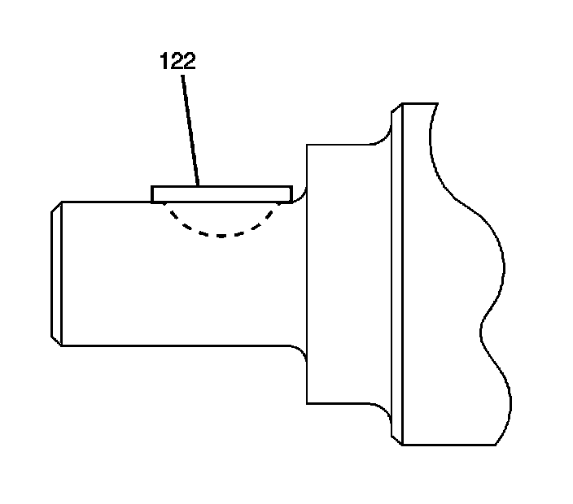
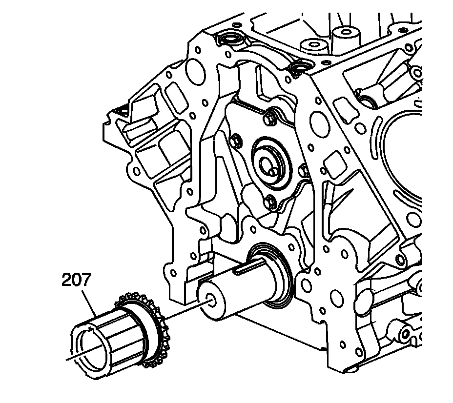
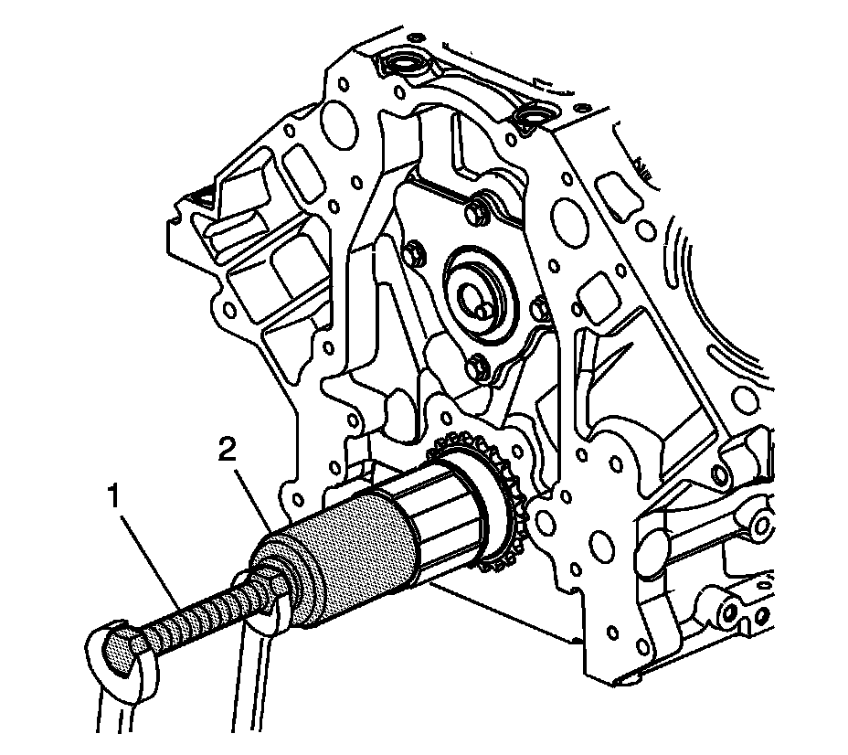

73. Timing Chain and Sprocket Installation
Timing Chain and Sprockets Installation
Tools Required
^ EN 46330 Timing Belt Tensioner Retaining Pin
^ J 41478 Crankshaft Front Oil Seal Installer
^ J 41665 Crankshaft Balancer and Sprocket Installer
^ J 42386-A Flywheel Holding Tool
^ J 45059 Angle Meter

1. Install the key into the crankshaft keyway, if previously removed.

2. Tap the key (122) into the keyway until both ends of the key bottom onto the crankshaft.

3. Install the crankshaft sprocket (207) onto the front of the crankshaft. Align the crankshaft key with the crankshaft sprocket keyway.

4. Use the J 41478 (1) and the J 41665 (2) in order to install the crankshaft sprocket.
Install the sprocket onto the crankshaft until fully seated against the crankshaft flange.
5. Rotate the crankshaft sprocket until the alignment mark is in the 12 o'clock position.

6. Compress the timing chain tensioner guide and install the EN 46330.

Notice: Refer to Fastener Notice.
7. Install the timing chain tensioner (232) and bolts (231).
Tighten the timing chain tensioner bolts to 25 N.m (18 lb ft).
Important:
^ Do not use the camshaft sprocket bolt again. Install a NEW bolt during assembly.
^ The sprocket teeth and timing chain must mesh.
^ The camshaft and the crankshaft sprocket alignment marks MUST be aligned properly.
Install the camshaft sprocket (205), timing chain (208), and NEW bolt (206).
8. Inspect the sprockets for proper alignment. The mark on the camshaft sprocket (1) should be located in the 6 o'clock position and the mark on the crankshaft sprocket (2) should be located in the 12 o'clock position.
9. Remove the EN 46330.
Important: Do not apply threadlock to the flex plate bolts at this time.
10. Temporarily install the automatic transmission flex plate and bolts. Refer to Automatic Transmission Flex Plate Installation.

11. Install the J 42386-A (1) and bolts. Use 1 M10-1.5 x 120 mm bolt and 1 M10-1.5 x 45 mm bolt for proper tool operation.
Tighten the J 42386-A bolts to 50 N.m (37 lb ft).
12. Tighten the camshaft sprocket bolt.
1. Tighten the camshaft sprocket bolt a first pass to 75 N.m (55 lb ft).
2. Tighten the camshaft sprocket bolt a final pass an additional 50 degrees using the J 45059.
13. Remove the J 42386-A and bolts.
14. Remove the automatic transmission flex plate and bolt. Refer to Automatic Transmission Flex Plate Removal.